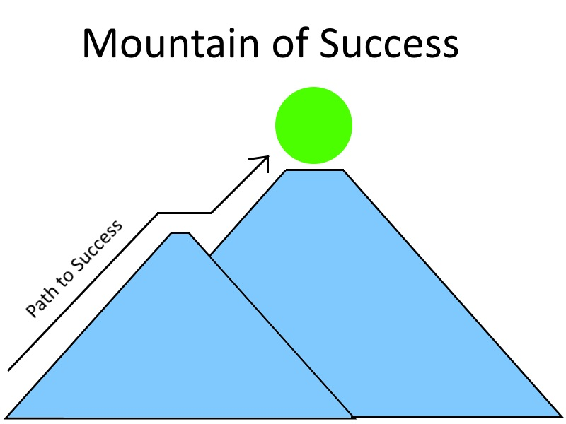
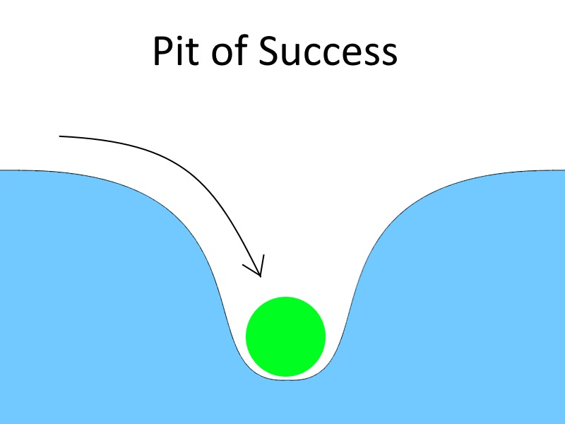
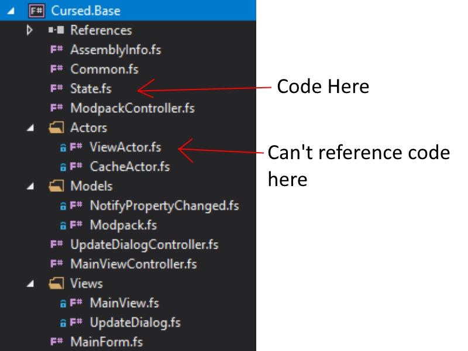
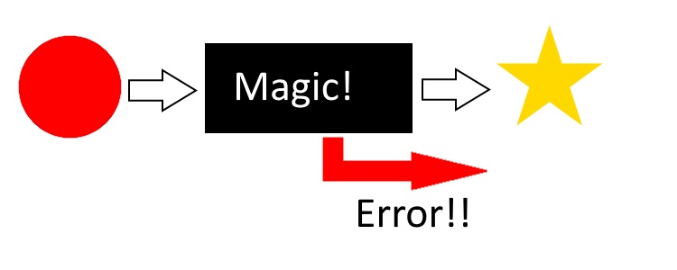
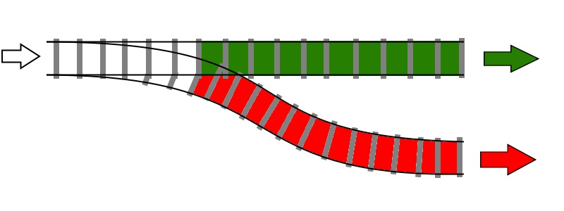
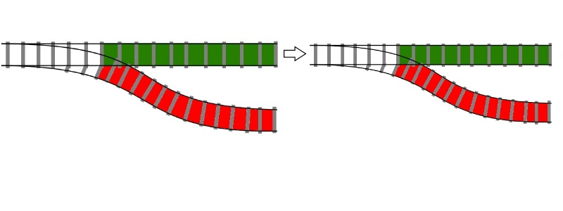
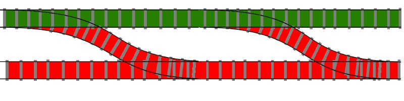
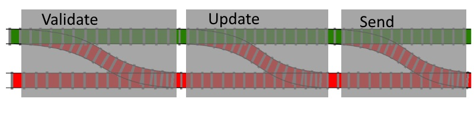

val thisIsAnInt : int
val thisIsAString : string
val optionalTypeAnnotation : bool
type bool = System.Boolean
val listOfFloats : float list
val arrayOfStrings : string []
val add : a:int -> b:int -> int
val a : int
val b : int
val sign : num:int -> string
val num : int
val fib : n:int -> int
val n : int
val printer : f:float -> unit
val f : float
val printfn : format:Printf.TextWriterFormat<'T> -> 'T
Multiple items
val filter : predicate:('T -> bool) -> list:'T list -> 'T list
val i : float
val map : mapping:('T -> 'U) -> list:'T list -> 'U list
val iter : action:('T -> unit) -> list:'T list -> unit
val value : 'a
val fn : ('a -> 'b)
type User =
User.FirstName: string
Multiple items
User.LastName: string
User.Age: int
Multiple items
val kai : User
val cloneOfKai : User
val olderKai : User
type Shape =
union case Shape.Rectangle: width: float * length: float -> Shape
Multiple items
union case Shape.Circle: radius: float -> Shape
union case Shape.Triangle: float * float * float -> Shape
val rectangle : Shape
val circle : Shape
val triangle : Shape
val whichShape : shape:Shape -> unit
val shape : Shape
val width : float
val length : float
val radius : float
val side1 : float
val side2 : float
val side3 : float
Multiple items
union case Option.Some: 'a -> Option<'a>
union case Option.None: Option<'a>
val validString : string option
type 'T option = Option<'T>
val invalidString : string option
val words : string list
val foundWord : string option
val tryFind : predicate:('T -> bool) -> list:'T list -> 'T option
val x : string
val missingWord : string option
val printString : input:Option<string> -> unit
val input : Option<string>
val s : string
type ContactUser =
ContactUser.Username: string
ContactUser.Email: string option
ContactUser.PhoneNumber: string option
val createUser : username:'a -> emailAddress:'b -> phoneNumber:'c -> ContactUser
val username : 'a
val emailAddress : 'b
val phoneNumber : 'c
type ContactInformation =
union case ContactInformation.Email: string -> ContactInformation
union case ContactInformation.PhoneNumber: string -> ContactInformation
union case ContactInformation.EmailAndPhone: string * string -> ContactInformation
type SafeContactUser =
SafeContactUser.Username: string
SafeContactUser.Contact: ContactInformation
val email : ContactInformation
val phoneNumber : ContactInformation
val emailAndPhone : ContactInformation
val user1 : SafeContactUser
val user2 : SafeContactUser
val user3 : SafeContactUser
val user4 : SafeContactUser
val user5 : SafeContactUser
val parseDateTime : dateTime:string -> 'a
val dateTime : string
val getYear : date:System.DateTime -> int
val date : System.DateTime
namespace System
Multiple items(+0 other overloads) (+0 other overloads) (+0 other overloads) (+0 other overloads) (+0 other overloads) (+0 other overloads) (+0 other overloads) (+0 other overloads) (+0 other overloads) (+0 other overloads)
property System.DateTime.Year: int
val date : System.DateTime
val currentYear : int
val composedGetYear : (string -> int)
val yearFromComposed : int
val add : x:int -> y:int -> int
val x : int
val y : int
val threeParams : firstName:'a -> middleName:'b -> lastName:'c -> unit
val firstName : 'a
val middleName : 'b
val lastName : 'c
val curriedAdd : (int -> int)
Multiple items
val sum : list:int list -> int
Multiple items
val reduce : reduction:('T -> 'T -> 'T) -> list:'T list -> 'T
val freeSum : (int list -> int)
val batchesOf : n:int -> (seq<'a> -> seq<seq<'a>>)
module Seq
val mapi : mapping:(int -> 'T -> 'U) -> source:seq<'T> -> seq<'U>
val i : int
val v : 'a
val groupBy : projection:('T -> 'Key) -> source:seq<'T> -> seq<'Key * seq<'T>> (requires equality)
val fst : tuple:('T1 * 'T2) -> 'T1
val map : mapping:('T -> 'U) -> source:seq<'T> -> seq<'U>
val snd : tuple:('T1 * 'T2) -> 'T2
val doubleAndIncrement : x:int -> int
val freeDoubleAndIncrement : (int -> int)
val result : string list * int
val async : AsyncBuilder
val username : string
val replies : string list
type 'T list = List<'T>
val count : int
val length : list:'T list -> int
Multiple items
static member Async.RunSynchronously : computation:Async<'T> * ?timeout:int * ?cancellationToken:System.Threading.CancellationToken -> 'T
Introduction to F# for greater type safety in .NET
Who here has any prior experience with F#/Functional programming
What is Functional Programming
Focus on data flow
Function Composition over Inheritance
Expressions over Statements
Focus on data flow instead of individual instructions. This gives a greater insight into what elements depend on what data, and in turn allows for easier refactoring in the future. See "What's Functional Programming All About?" by Li Haoyi
Common traits of the Functional paradigm
Higher order functions
High level abstractions
Code reusability
Pure Functions
Easier to reason about
Idempotency
Immutability
Predictability
Thread safety
Less bugs
"If it compiles, it works"
"Pit of Success"

The ball is your project and its architecture

This time, success is at the bottom of the pit
What is F#
Functional first, multi-paradigm language
Runs on .Net (and Mono, Xamarin, .Net Core)
First released in 2005 by Microsoft Research
Now belongs to The F# Software Foundation
Open Source
Syntax in a nutshell
ML syntax
Statically Typed with type inference
Whitespace significant
Expression-based
Immutable by default
1:
2:
3:
4:
5:
6:
7:
8:
9:
let thisIsAnInt = 1
let thisIsAString = "This is a string"
let optionalTypeAnnotation : bool = true
let listOfFloats = [ 1.0 ; 2.0 ; 3.0 ]
let arrayOfStrings =
[| "www.zuehlke.com"
"www.duckduckgo.com"
"www.microsoft.com" |]
let declarations are called values instead of variables
Functions
First class functions
Can be passed around like other values
Last expression is the return "statement"
1:
2:
3:
4:
5:
6:
7:
8:
9:
10:
11:
12:
13:
let add a b =
a + b
let sign num =
if num > 0 then "positive"
elif num < 0 then "negative"
else "zero"
let rec fib n =
match n with
| 1 -> 1
| 2 -> 1
| n -> fib (n - 1 ) + fib (n - 2 )
Piping
1:
2:
3:
4:
5:
6:
7:
8:
9:
10:
let printer f = printfn "Number is: %f " f
[0.0 .. 100.0 ]
|> List . filter (fun i -> i % 2.0 = 0.0 )
|> List . map (fun i -> i ** 2.0 )
|> List . iter printer
// |> List.iter (fun i -> printer i)
let (|> ) value fn =
fn value
Records
Simple aggregates of data
Can be struct or reference types
Has structural equality
1:
2:
3:
4:
5:
6:
7:
8:
9:
10:
11:
12:
13:
14:
type User =
{ FirstName : string
LastName : string
Age : int }
let kai = { FirstName = "Kai" ; LastName = "Ito" ; Age = 88 }
let cloneOfKai = { FirstName = "Kai" ; LastName = "Ito" ; Age = 88 }
printfn " %b " (kai = cloneOfKai ) // true
let olderKai = { kai with Age = kai . Age + 1 }
printfn " %i " (olderKai . Age ) // 89
printfn " %i " (kai . Age ) // 88
Discriminated Unions
More powerful enum
Data point that can have multiple different types
1:
2:
3:
4:
5:
6:
7:
8:
9:
10:
11:
12:
13:
14:
15:
16:
17:
type Shape =
| Rectangle of width : float * length : float
| Circle of radius : float
| Triangle of float * float * float
let rectangle : Shape = Rectangle (2.0 , 5.0 )
let circle : Shape = Circle 2.5
let triangle : Shape = Triangle (6.1 , 2.0 , 3.7 )
let whichShape (shape : Shape ) =
match shape with
| Rectangle (width , length ) ->
printfn "Rectangle with sides %f %f " width length
| Circle radius ->
printfn "Circle with radius %f " radius
| Triangle (side1 , side2 , side3 ) ->
printfn "Triangle with sides %f %f %f " side1 side2 side3
Benefits of the F# type system
No null
Make illegal states unrepresentable
Use types to represent the domain
Types can also be used to encode business logic
Files and code must be in dependency order
File and code cannot use forward reference. What this means is that code can only reference values and functions written above it. This means the order of files are important.
The Option type
1:
2:
3:
4:
5:
6:
7:
8:
9:
10:
11:
12:
13:
14:
15:
16:
17:
18:
19:
20:
21:
type Option < ' a > =
| Some of ' a
| None
let validString : string option = Some "text"
let invalidString : string option = None
let words = [ "hello" ; "world" ; "from" ; "home" ; ]
let foundWord = words |> List . tryFind (fun x -> x = "world" )
let missingWord = words |> List . tryFind (fun x -> x = "outside" )
printfn "The word is: %s " foundWord
// Compile Error: Type mismatch: Expecting "string" but got "string option"
let printString input =
match input with
| Some s -> printfn "The word is: %s " s
| None -> printfn "Didn't find word"
printString foundWord // The word is: world
printString missingWord // Didn't find word
This is how a lack of value is represented
Making illegal state unrepresentable
Imagine business logic where a User either needs an email address or phone number or both
Required to have at least one of them
1:
2:
3:
4:
5:
6:
7:
type ContactUser = { Username : string ; Email : string option ; PhoneNumber : string option }
let createUser username emailAddress phoneNumber =
// Logic to assign either email address or phone or both
// Error prone
{ Username = "kaiito" ; Email = "kai.ito@zuehlke.com" ; PhoneNumber = "123 456 789" }
F# Type System to the rescue
1:
2:
3:
4:
5:
6:
7:
8:
9:
10:
11:
12:
13:
14:
15:
16:
17:
type ContactInformation =
| Email of string
| PhoneNumber of string
| EmailAndPhone of string * string
type SafeContactUser = { Username : string ; Contact : ContactInformation }
let email = Email "kai.ito@zuehlke.com"
let phoneNumber = PhoneNumber "123 456 789"
let emailAndPhone = EmailAndPhone ("kai.ito@zuehlke.com" , "123 456 789" )
let user1 = { Username = "kaiito1" ; Contact = email }
let user2 = { Username = "kaiito2" ; Contact = phoneNumber }
let user3 = { Username = "kaiito3" ; Contact = emailAndPhone }
let user4 = { Username = "kaiito4" ; Contact = null } // Compiler Error
let user5 = { Username = "kaiito5" ; Contact = "someString" } // Compiler Error
When deconstructing the Contact information, automatically know what kind of contact information it is
Assumes happy path
Dependency Order

Code in State.fs can't reference any code declared in any of the files below it.
Function Composition
Compose multiple functions into one function
Code reusability without verbosity
1:
2:
3:
4:
5:
6:
7:
8:
9:
10:
11:
12:
13:
14:
let parseDateTime (dateTime : string ) = DateTime . Parse (dateTime )
let getYear (date : System . DateTime ) = date . Year
let date = parseDateTime "26-04-2020 12:00am"
let currentYear : int = getYear date
printfn "The current year is: %i " currentYear
// The current year is: 2020
let composedGetYear : string -> int = parseDateTime > > getYear
let yearFromComposed : int = composedGetYear "26-04-2020 12:00am"
printfn "The current year from composed function is: %i " yearFromComposed
// The current year from composed function is: 2020
Before I get into a use case for function composition, I'd like to take a look at function currying first
Function Currying and Partial Function Application
Creating new functions by not supplying all parameters
F# curries all functions by default
What does x: int -> y: int -> int mean
Curried function
1:
2:
let add x y =
x + y
1:
2:
3:
4:
5:
6:
7:
8:
9:
10:
11:
let add x =
fun y ->
x + y
let threeParams firstName middleName lastName =
printfn "Full name is: %O , %O , %O " firstName middleName lastName
let threeParams firstName =
fun middleName ->
fun lastName ->
printfn "Full name is: %O , %O , %O " firstName middleName lastName
A curried function is a function created by only supplying a part of the parameters a function expects
Partial Function Application
Using curried functions
Only supply some of the parameters
1:
2:
3:
4:
5:
6:
7:
8:
9:
10:
11:
12:
let add x y =
x + y
let curriedAdd = add 3
printfn "Result is: %i " (curriedAdd 5 )
// Result is: 8
let double = (*) 2
[1.. 10 ]
|> List . map double
// [2; 4; 6; 8; 10; 12; 14; 16; 18; 20]
Point-free programming
What happens when you abuse currying and partial function application
Avoid explicitly specifying parameters
Use Higher-order functions everywhere
1:
2:
3:
4:
5:
6:
7:
8:
9:
10:
11:
12:
13:
14:
let sum list = List . reduce (+ ) list
let freeSum = List . reduce (+ )
let batchesOf n =
Seq . mapi (fun i v -> i / n , v ) > >
Seq . groupBy fst > >
Seq . map snd > >
Seq . map (Seq . map snd )
[0.. 10 ]
|> batchesOf 2 // [[0; 1]; [2; 3]; [4; 5]; [6; 7]; [8; 9]; [10]]
let doubleAndIncrement x = x * 2 + 1
let freeDoubleAndIncrement = (*) 2 > > (+ ) 1
Both functions have same signature
Demo
functionCurryingDemo.fsx
Railway Oriented Programming
Error handling through function composition
Clean control flow
Treat errors as first class citizens
Not just exceptions. Any errors, for example validation messages as well
Problems with the Imperative approach
1:
2:
3:
4:
5:
6:
7:
8:
9:
10:
11:
12:
13:
14:
public string UpdateAndSend(string input)
{
if (string .IsNullOrWhitespace(input))
return "empty input" ; // Or should we throw an Exception?
try {
var updatedUser = UpdateUserInDatabase(input);
return ConvertToJson(updatedUser);
}
catch (DatabaseException e) {
logger.log(e.Message);
return "Problem updating user in DB" ; // Or should we rethrow?
}
}
There's no unifying way to handle errors

Let's take a look at our Red Circle to Yellow Star function from earlier

We can model our function like a railway switch

And just like real rail tracks, we can easily combine them

We can expand the input of our functions to take in an error as well

We can now expand this model to compose as many functions as we want, creating an entire workflow
Demo
railwayOrientedDemo.fsx
Monads
A monad is just a monoid in the category of endofunctors
Chainable wrapper around a data structure that performs an extra operation after each expression
Semicolon at end of statement performs extra action
Monad in Detail
A constructor that wraps a value: the monadic value M
A bind function that accepts a function as its parameter
Applies this function to the internally wrapped value M
Returns the function’s output wrapped as a monad
A return function that simply unwraps the monadic value
JavaScript Promise
1:
2:
3:
4:
5:
const myPromise =
(new Promise(() = > getDataFromBackend())))
.then(response = > callThirdPartyApi(response.username))
.then(response = > updateHtml(response.data))
.catch (error = > console.log(error));
F# Computation Expression
NOT Monads
Can be used to express monads
Here is the async monad, or continuation monad
1:
2:
3:
4:
5:
6:
7:
8:
9:
let result =
async {
let! (username : string ) = getByIdAsync 1
let! (replies : string list ) = getRepliesByUsernameAsync username
let count = replies |> List . length
return (replies , count )
} |> Async . RunSynchronously
The let bang calls the bind method on the builder, in this case the async builder
Demo
Easier to understand with a demo